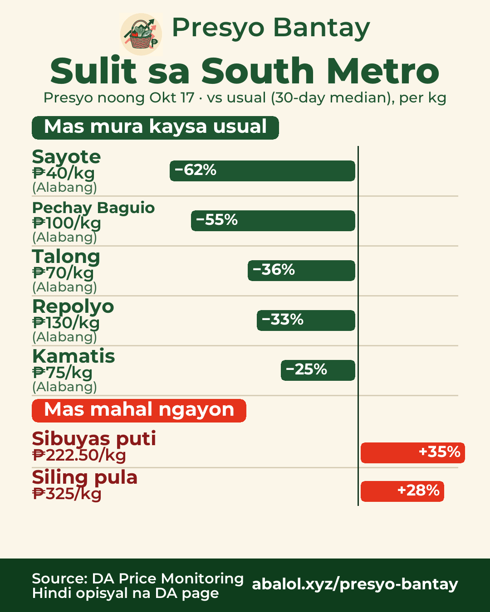
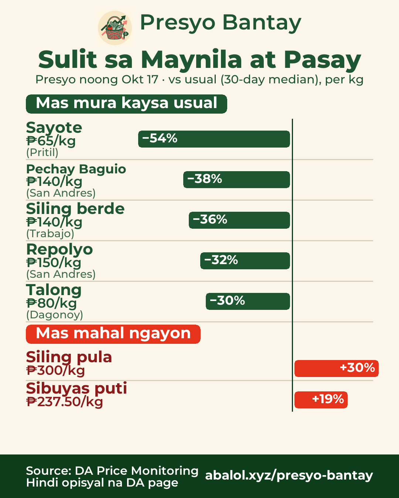
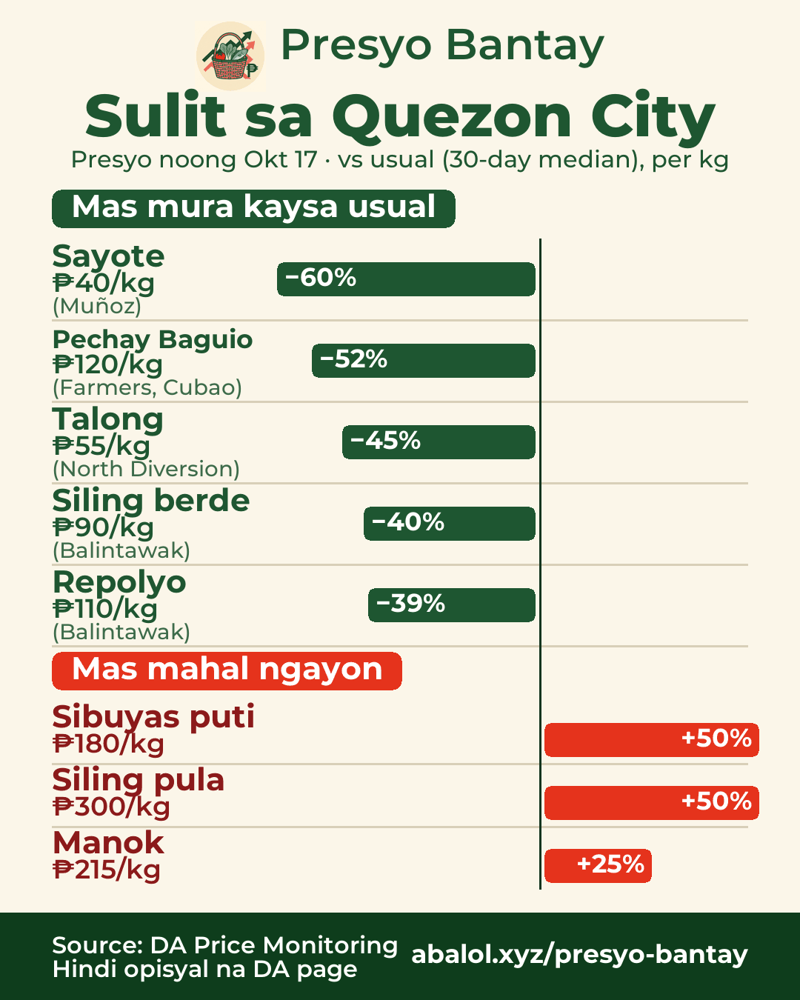
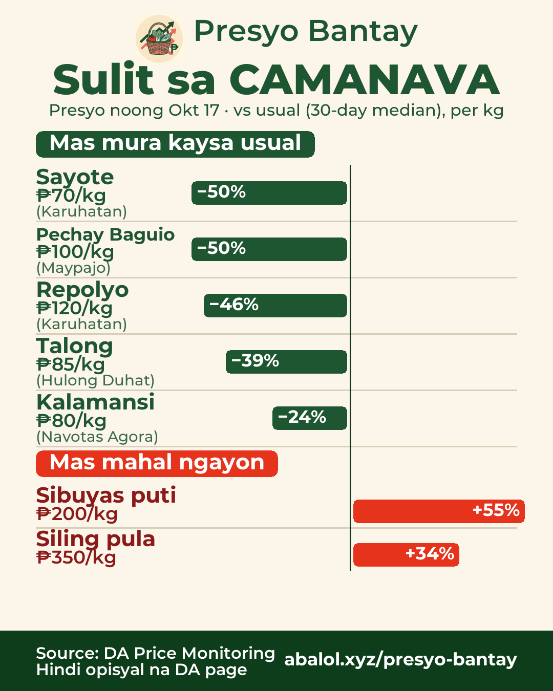
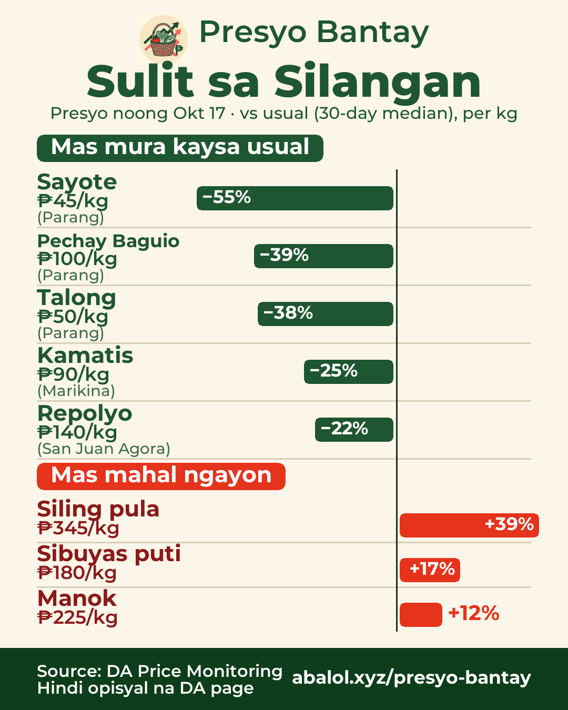

Okt 17, 2026Oct 17, 20262026年10月17日
Sulit sa palengkeMarket deals市場のお買い得
% = kumpara sa usual na presyo (30 araw)% = vs usual price (30-day)% = 30日間のいつもの価格比
South MetroSouth Metro南部（ラス・ピニャス周辺）

🛒 Sulit sa South Metro — presyo noong Okt 17
✅ Mas mura kaysa usual:
- Sayote ₱40/kg (−62%) · Alabang
- Pechay Baguio ₱100/kg (−55%) · Alabang
- Talong ₱70/kg (−36%) · Alabang
- Repolyo ₱130/kg (−33%) · Alabang
- Kamatis ₱75/kg (−25%) · Alabang
⚠️ Mas mahal ngayon:
- Sibuyas puti ₱222.50/kg (+35%)
- Siling pula ₱325/kg (+28%)
🇬🇧 Deals in South Metro — prices of Oct 17
✅ Chayote ₱40 (−62%), Pechay Baguio ₱100 (−55%), Eggplant ₱70 (−36%), Cabbage ₱130 (−33%), Tomato ₱75 (−25%)
⚠️ Pricier: White onion ₱222.50 (+35%), Red chili ₱325 (+28%)
🇯🇵 南部（ラス・ピニャス周辺）のお買い得 — 10/17の価格
✅ サヨテ ₱40（−62%）、ペチャイ・バギオ ₱100（−55%）、ナス ₱70（−36%）、キャベツ ₱130（−33%）、トマト ₱75（−25%）
⚠️ 高め：白玉ねぎ ₱222.50（+35%）、赤唐辛子 ₱325（+28%）
Maynila at PasayManila & Pasayマニラ・パサイ

🛒 Sulit sa Maynila at Pasay — presyo noong Okt 17
✅ Mas mura kaysa usual:
- Sayote ₱65/kg (−54%) · Pritil
- Pechay Baguio ₱140/kg (−38%) · San Andres
- Siling berde ₱140/kg (−36%) · Trabajo
- Repolyo ₱150/kg (−32%) · San Andres
- Talong ₱80/kg (−30%) · Dagonoy
⚠️ Mas mahal ngayon:
- Siling pula ₱300/kg (+30%)
- Sibuyas puti ₱237.50/kg (+19%)
🇬🇧 Deals in Manila & Pasay — prices of Oct 17
✅ Chayote ₱65 (−54%), Pechay Baguio ₱140 (−38%), Green chili ₱140 (−36%), Cabbage ₱150 (−32%), Eggplant ₱80 (−30%)
⚠️ Pricier: Red chili ₱300 (+30%), White onion ₱237.50 (+19%)
🇯🇵 マニラ・パサイのお買い得 — 10/17の価格
✅ サヨテ ₱65（−54%）、ペチャイ・バギオ ₱140（−38%）、青唐辛子 ₱140（−36%）、キャベツ ₱150（−32%）、ナス ₱80（−30%）
⚠️ 高め：赤唐辛子 ₱300（+30%）、白玉ねぎ ₱237.50（+19%）
Quezon CityQuezon Cityケソン市

🛒 Sulit sa Quezon City — presyo noong Okt 17
✅ Mas mura kaysa usual:
- Sayote ₱40/kg (−60%) · Muñoz
- Pechay Baguio ₱120/kg (−52%) · Farmers, Cubao
- Talong ₱55/kg (−45%) · North Diversion
- Siling berde ₱90/kg (−40%) · Balintawak
- Repolyo ₱110/kg (−39%) · Balintawak
⚠️ Mas mahal ngayon:
- Sibuyas puti ₱180/kg (+50%)
- Siling pula ₱300/kg (+50%)
- Manok ₱215/kg (+25%)
🇬🇧 Deals in Quezon City — prices of Oct 17
✅ Chayote ₱40 (−60%), Pechay Baguio ₱120 (−52%), Eggplant ₱55 (−45%), Green chili ₱90 (−40%), Cabbage ₱110 (−39%)
⚠️ Pricier: White onion ₱180 (+50%), Red chili ₱300 (+50%), Chicken ₱215 (+25%)
🇯🇵 ケソン市のお買い得 — 10/17の価格
✅ サヨテ ₱40（−60%）、ペチャイ・バギオ ₱120（−52%）、ナス ₱55（−45%）、青唐辛子 ₱90（−40%）、キャベツ ₱110（−39%）
⚠️ 高め：白玉ねぎ ₱180（+50%）、赤唐辛子 ₱300（+50%）、丸鶏 ₱215（+25%）
CAMANAVANorth (CAMANAVA)北部（カマナバ）

🛒 Sulit sa CAMANAVA — presyo noong Okt 17
✅ Mas mura kaysa usual:
- Sayote ₱70/kg (−50%) · Karuhatan
- Pechay Baguio ₱100/kg (−50%) · Maypajo
- Repolyo ₱120/kg (−46%) · Karuhatan
- Talong ₱85/kg (−39%) · Hulong Duhat
- Kalamansi ₱80/kg (−24%) · Navotas Agora
⚠️ Mas mahal ngayon:
- Sibuyas puti ₱200/kg (+55%)
- Siling pula ₱350/kg (+34%)
🇬🇧 Deals in North (CAMANAVA) — prices of Oct 17
✅ Chayote ₱70 (−50%), Pechay Baguio ₱100 (−50%), Cabbage ₱120 (−46%), Eggplant ₱85 (−39%), Calamansi ₱80 (−24%)
⚠️ Pricier: White onion ₱200 (+55%), Red chili ₱350 (+34%)
🇯🇵 北部（カマナバ）のお買い得 — 10/17の価格
✅ サヨテ ₱70（−50%）、ペチャイ・バギオ ₱100（−50%）、キャベツ ₱120（−46%）、ナス ₱85（−39%）、カラマンシー ₱80（−24%）
⚠️ 高め：白玉ねぎ ₱200（+55%）、赤唐辛子 ₱350（+34%）
SilanganEast Metro東部

🛒 Sulit sa Silangan — presyo noong Okt 17
✅ Mas mura kaysa usual:
- Sayote ₱45/kg (−55%) · Parang
- Pechay Baguio ₱100/kg (−39%) · Parang
- Talong ₱50/kg (−38%) · Parang
- Kamatis ₱90/kg (−25%) · Marikina
- Repolyo ₱140/kg (−22%) · San Juan Agora
⚠️ Mas mahal ngayon:
- Siling pula ₱345/kg (+39%)
- Sibuyas puti ₱180/kg (+17%)
- Manok ₱225/kg (+12%)
🇬🇧 Deals in East Metro — prices of Oct 17
✅ Chayote ₱45 (−55%), Pechay Baguio ₱100 (−39%), Eggplant ₱50 (−38%), Tomato ₱90 (−25%), Cabbage ₱140 (−22%)
⚠️ Pricier: Red chili ₱345 (+39%), White onion ₱180 (+17%), Chicken ₱225 (+12%)
🇯🇵 東部のお買い得 — 10/17の価格
✅ サヨテ ₱45（−55%）、ペチャイ・バギオ ₱100（−39%）、ナス ₱50（−38%）、トマト ₱90（−25%）、キャベツ ₱140（−22%）
⚠️ 高め：赤唐辛子 ₱345（+39%）、白玉ねぎ ₱180（+17%）、丸鶏 ₱225（+12%）